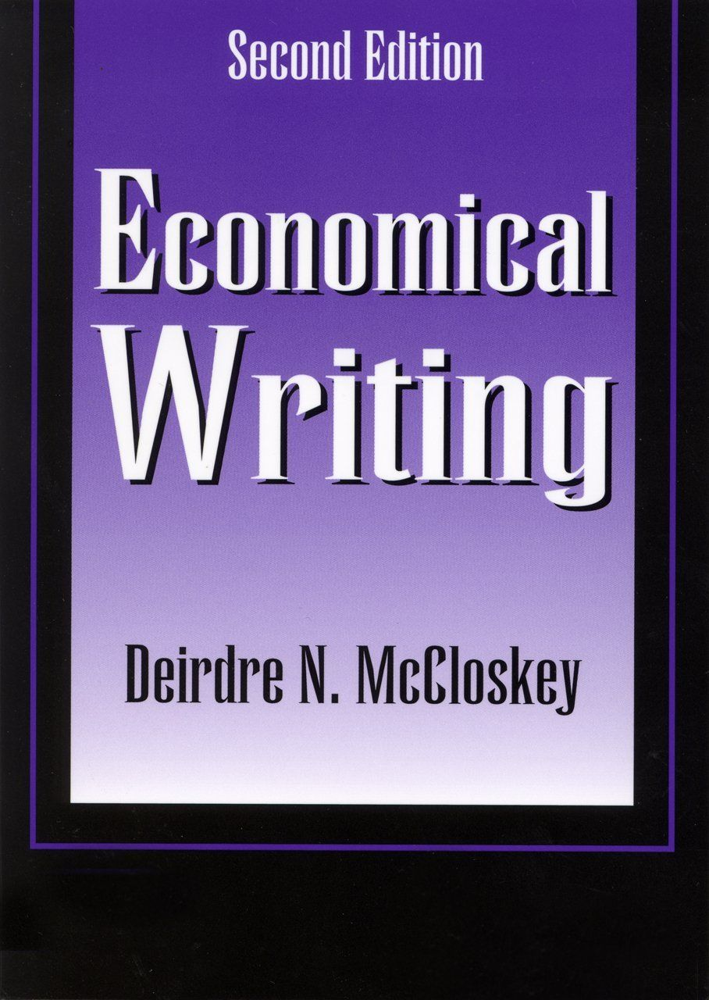

's No Common Sense: Philosophy Tackles Climate Change is a work of ART! He apologizes at the beginning for repeating himself throughout the book, something that turned out to add
's No Common Sense: Philosophy Tackles Climate Change is a work of ART! He apologizes at the beginning for repeating himself throughout the book, something that turned out to add


 |
Economical Writing (Second Edition) by Deirdre McCloskey The psychologist Mihaly Csikszentmihalyi ("CHICK-sent-mee-high-ee") has discovered that happiness is not a six-pack and a sport utility vehicle but what he calls "flow," which occurs "when a person's skills are fully involved in overcoming a challenge that is just about manageable" (1997) […] To have a fulfilled life you want to achieve flow. Believe me, skillful writing is one way. Good style is what good writers do. Double negatives, for example, aren't "illogical" (modern French and ancient Greek have them); they are social mistakes, at least right now. The three important parts of classical rhetoric were invention, arrangement, and style. The official rhetoric is a poor one. Invention: the framing of arguments worth listening to. Waves of doubt -the conviction that everything you've done so far is rubbish- will wash over you from time to time. The only help is a cheerful faith that more work will raise even this rubbish up to your newly acquired standards. Once achieved, you can reraise the standards and acquire better doubt at a level of still better taste. Buck up. Irrational cheerfulness is hard to teach but good to have for any work. It's instructive to keep a personal book of quotations, containing economic ideas you think are expressed well. It's called a "commonplace book," not because it's cheesy but because in classical rhetoric the commonly shared materials of invention were called loci communes, literally "the common places" or "usual topics," "koinoi topoi" in Greek. Well kept, such a book can be the writer's journal of which Mills spoke. Simon James published his for economics, as A Dictionary of Economic Quotations (1984), mainly British, which contains much encouraging evidence that British economists know how to turn a phrase. The guiding question in research (research is not the subject here, but I'm not charging extra) is So What? Answer that question in every sentence, and you will become a great scholar, or a millionaire; answer it once or twice in a ten-page paper, and you'll write a good one. It is healthy discipline to be haunted by people with high standards (but with some sympathy for the enterprise) looking over your shoulder in imagination. It keeps the prose steady at one level of difficulty to imagine one master spirit. "To overcome the academic prose you have first to overcome the academic pose. - Mills One must decide to be understood and worry some other time about being admired. Do not try to impress people who already understand the argument. Adam Smith pointed out that indignation by you the Author against That Idiot arouses in the reader sympathy for That Idiot Most academic prose, from both students and faculty, could use more humor. There is nothing unscientific in self-deprecating jokes about the sample size, and nothing unscholarly in dry wit about the failings of intellectual opponents. Even a pun can bring cheer to a grader working through the 54th term paper. A writer must entertain if she is to be read. Only third-rate scholars and C students are so worried about the academic pose that they insist on their dignity. Citing whole books and articles is a disease in modern economics, spread by the author-date citation, such as that used in this book. […] by not bothering to find it the author misses the chance to reread, and think. The most important rule of rearrangement is that the end of the sentence is the place of emphasis. […] Dump less important things in the middle, or in the trash. That foolish young man of Japan, whose limericks never would scan. When asked why it was he replied, "it's because I always try to get as much into the last line as I ever possibly can." Close study of Time and the Wall Street Journal doesn't normally suffice as an education in literacy-although it must be admitted that journalists like Meg Greenfield, Dave Barry, and PJ O'Rourke use the newspaper language admirably well, and are good models. They got that way, though, by reading the real stuff, Shakespeare and Ring Lardner. Flee the cliché when a more original word is precise and vivid. Study of dictionaries and style books and the best writing of the ages will make you at least embarassed to be ignorant, the beginning of wisdom. Recommendations: - On the Accuracy of Economic Observations, 2nd ed, chapter 1 (Oskar Morgenstern) [who wants to read 3.14159256 when 3 1/7 describes it just the same?] - The Art of the Footnote - GW Bowersock Deirdre McCloskey's list of best writers in recent economics: Akerlof, Arrow, Boulding, Bronfenbrenner, Buchanan, Caves, Easterlin, Fogel, Frank, Friedman, Haberler, Harberger, Heilbroner, Hirschman, Hughes, Galbraith, Gerschenkron, Griliches, Harry Johnson, Keynes, Kindleberger, Lebergott, Leijonhufvud, Olson, Robertson, Joan Robinson, Rostow, Schelling, Schumpeter, Theodore Schultz, Solow, Stigler, Tobin, Tullock, Yeager |